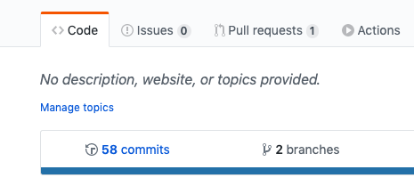
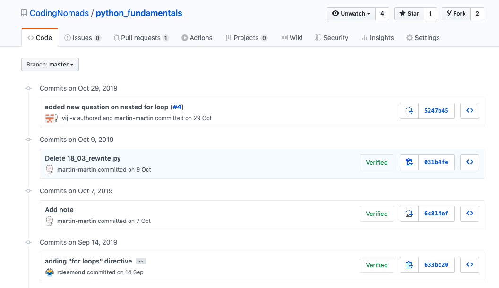
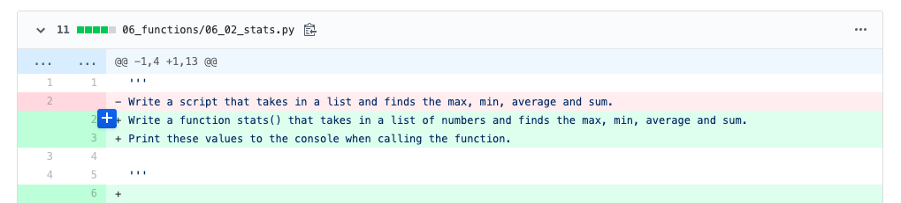
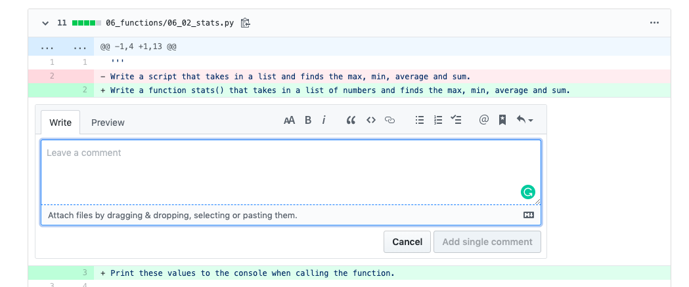
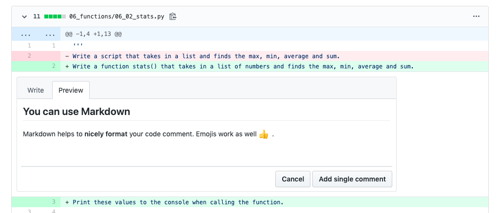

Mentorship Tips¶
A collection of practical tips collected by mentors throughout the mentorship process. Feel free to add your own.
How to structure a 1:1 session¶
Here are some suggestions that can make it easier to set yourself and your student up for a productive 1:1 call.
- Send them a reminder and some prep questions 1 day before your scheduled call
- Say hi, be friendly and motivating
- Ask whether they have any specific struggles and/or questions
- Ask them to walk you through everything they did since your last call
Also see the doc section "What to talk about".
Push for regular meetings¶
It is important to meet with your student, even if nothing went forward on their end. It’s first and foremost the human contact that creates and upkeeps motivation. Encourage your students to meet regularly (you can use this template). Find a time that works for them and stick to it.
Social accountability is motivating for humans!
Teach and learn by doing code reviews¶
GitHub allows you to create in-line code comments in commits. Giving and getting code reviews is a great way to improve your coding skills. It trains you to:
- read and understand other people's code
- learn about different solutions to a task
- formulate your thoughts in relation to code
- give constructive feedback, and learn from receiving it
Guidelines¶
Be nice: When you give a code review to a student, be nice! No one benefits from a nasty review. Give directions: As with mentorship in general, avoid giving solutions directly. Find the solution yourself, then give the other person hints so they can figure it out on their own. We learn the most by figuring something out ourselves. Use markdown: Readability helps. Use Markdown to make your comment nicely formatted. And you can use emojis too.
What to comment on?¶
- Suggestions: Suggest improvements if you find something that's incorrect or could be improved
- Congratulations: Give positive feedback if there's something you liked or found interesting
- Challenges: Introduce challenges if you see that someone is onto something and might benefit from a nudge into a specific direction
Examples [TODO]¶
Here are some examples of code reviews from the on-site course part. Read over them to get an idea of how to give code reviews.
Do code reviews on GitHub¶
Every time your student commits code and pushes it to GitHub, it will be available for other people to comment on. Use the great in-line code comment functionality on GitHub commits to facilitate learning and get your students used to the idea of code reviews.
Go over how to create and interact with GitHub code comments together with your student on a call.
How to add a comment?¶
Here's a step-by-step walkthrough on adding a comment to a GitHub commit:
Go to your student's GitHub account, choose the right repository and navigate to their commits:

You will see a page similar to the following screenshot. Once there, click on a single commit (you can do this for every commit!). This steps you into the code that was added/changed/deleted during that specific commit:

Inside of a commit's page, you'll see code lines, some of them green and red. The view is split up on a per file basis and you can easily comment directly in a specific line by clicking on the blue plus that appears when hovering over a line:

Clicking it opens up a comment box, like so:

Type your code comment into this box. Remember our code review tips (e.g. that Markdown is supported). You can check up on your result by clicking the Preview tab:

Finally, click Add single comment and your feedback is live!
You can also reply to a comment on GitHub.